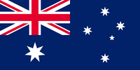
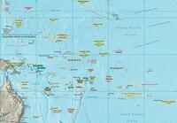
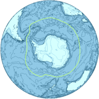
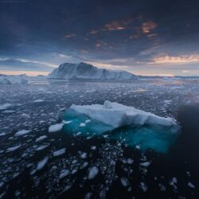
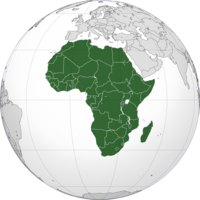
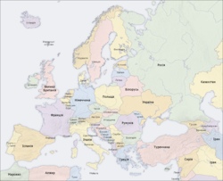
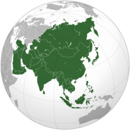
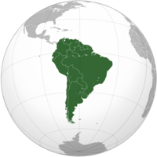
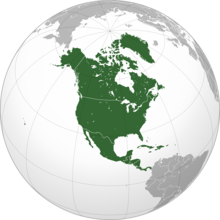

Австралія
Австралія — федеративна держава, що знаходиться у Південній півкулі Землі й повністю займає однойменний материк, прилеглий великий острів Тасманія на півдні й численні дрібні навколо, серед яких Норфолк і Лорд-Гав у Тихому океані, Кокосові острови в Індійському та інші. Площа країни дорівнює 7 688 287 км², це 6-те місце серед країн світу й перше серед країн Океанії. Австралія на півночі відділена від Папуа — Нової Гвінеї водами Торресової протоки, Тиморського і Арафурського морів від Індонезії та Східного Тимору; на сході — водами Коралового моря від Соломонових Островів, Вануату і Нової Каледонії (Франція); на південному сході — водами Тасманового моря від Нової Зеландії. Населення країни становить 25,25 млн осіб. Країна з високорозвиненою економікою, 13-те місце серед економік світу.
Населення країни становить 25,25 млн осіб[2]. Австралія — країна іммігрантів, які становлять 26 % населення, за цим показником країна посідає 9-те місце у світі[9][10]. Столиця Австралії — місто Канберра — розташоване у спеціально створеній Австралійській столичній території. Найбільше місто — Сідней. Країна високо урбанізована. Населення розміщене дуже нерівномірно: більшість його мешкає на південному сході, у штатах Вікторія та Новий Південний Уельс[2][11]. Близько 60 % населення проживає в найбільших містах та їхніх агломераціях: Сідней Мельбурн, Брисбен, Перт та Аделаїда. Середня густота населення 3,3 особи на км², це найнижчий показник у світі
Австралія була заселена корінними австралійцями близько 60 тис. років тому[14]. Австралійські аборигени розмовляли мовами, що становлять 250 окремих груп[15][16]. Образотворче мистецтво аборигенів, з яким можна ознайомитись на скелях у різних куточках країни, є найстарішим у світі[17]. Уперше європейці з'явились на континенті 1606 року, це була голландська експедиція Віллема Янсзона[7]. Східна частина Австралії була досліджена британською експедицією Джеймса Кука наприкінці XVIII століття[18]. 26 січня 1788 року — національний день Австралії, того дня була заснована перша колонія — Новий Південний Уельс. 1829 року з утворенням Західної Австралії вся територія Австралії була включена до складу британської корони[18]. До колонії на постійне проживання засилали засуджених, так британці поступово заселили південно-східне узбережжя континенту. На початку 1850-х років у країні розпочалась «золота лихоманка», що збільшила чисельність населення та значно пожвавила економіку[19]. Населення континенту постійно зростало, до 1850-х років більша частина територій була досліджена. Загалом було створено 6 самоврядних колоній. 1 січня 1901 року ці колонії об'єдналися, утворивши Австралійський Союз.
Назва країни походить з латинського терміна Terra Australis, що означає «південна земля»[33]. Територія була названа так ранніми європейськими дослідниками, що вважали гіпотетичний австралійський материк набагато більшим, таким, що спроможний врівноважити суходіл північних материків[34]. Ще на карті давньогрецького ученого Птолемея на південь від південного тропіка значиться Невідома Південна земля (англ. Terra Australis Inkognita). Уперше топонім «Австралія» англійською мовою було використано 1625 року в праці «Нотатка про Південну Землю Святого Духа» (англ. A note of Australia del Espíritu Santo) Річарда Гаклюйта, яку вперше видав Семюель Поур в антології «Hakluytus Posthumus». Це помилкове спотворення оригінального іспанського топоніма островів Вануату[35][36][37][38]. Голландською топонім уперше був використаний 1638 року в прислівниковій формі нід. australische для позначення нововідкритих земель на південь від Батавії[39]. Голландські вчені, на відміну від інших європейських, що продовжували користуватись латинською назвою, стали використовувати терміни як australisch, так і Нова Голландія (нід. Nieuw Holland), запропонований Абелем Тасманом 1644 року. Британський мандрівник Метью Фліндерс, який першим обплив навколо Австралії і склав карту австралійських берегів, використав термін «Австралія» у своїй роботі «Подорож до Південної Землі» (англ. A Voyage to Terra Australis) як такий, що «більш приємний для вуха й подібний до інших назв континентів»[40][34]. Перше офіційне затвердження топоніму відбулося у квітні 1817 року, коли губернатор Нового Південного Уельсу Лохлен Маккуорі отримав карти Фліндерса від лорда Генрі Батерста[34][41]. Вже у грудні він рекомендував Колоніальному міністерству офіційно дотримуватись цієї назви у документообігу[42]. 1824 року Британське адміралтейство погодилось на використання топоніму на всіх своїх картах[43]. 1830 року Гідрографічне бюро видало перший офіційний «Довідник Австралії» (англ. The Australia Directory)[43].
Океанія
Океа́нія — загальна назва для островів центральної та південної частини Тихого океану між 30° пд. ш. і 30° пн. ш., включаючи Нову Зеландію і Нову Гвінею;площа 1,26 млн км²;міста з населенням понад 300 тис.: Окленд, Веллінгтон, Крайстчерч, Гонолулу, Порт-Морсбі, Порт-Нумбай і Амбон ;рельєф: довжина від Тропіка Рака на півночі до краю Нової Зеландії;
Ширше Океанію можна розділити на групи вулканічних і коралових островів на основі етнічного походження їхніх мешканців: Мікронезія (Гуам, Кірибаті, Маріанські, Маршаллові і Каролінські острови); Меланезія (Нова Гвінея, Вануату, Нова Каледонія, Фіджі, Соломонові острови) і Полінезія (Гаваї, Тонга, Самоа, Тувалу, Французька Полінезія, острови Лайн). найнижча точка — Таєрі Плейнс, Нова Зеландія (-2 м).
Державотворення
- Меланезія
- Соломонові Острови
- Вануату
- Фіджі
- Папуа Нова Гвінея
- Нова Каледонія
- Молуккські острови
- Папуа (провінція)
- Західне Папуа (провінція)
- Мікронезія
- Науру
- Маршалові острови
- Федеративні Штати Мікронезії
- Палау
- Гуам (США США)
- Північні Маріанські острови (США США)
- Полінезія
- Нова Зеландія
- Американське Самоа
- Острови Кука
- Острів Пасхи
- Французька Полінезія
- Гаваї
- Ніуе
- Піткерн
- Самоа
- Токелау
- Тонга
- Тувалу
- Волліс і Футуна
Океанія являє собою найбільше у світі скупчення островів, розташованих в західній і центральній частинах Тихого океану, між субтропічними широтами Північної та помірними Південної півкуль. При поділі всієї суші на частини світу Океанія зазвичай об'єднується з Австралією в єдину частину світу Австралія та Океанія.
Загальна площа островів становить 1,26 млн км², населення — близько 10,7 млн осіб. Географічно Океанія підрозділяється на Меланезію, Мікронезію і Полінезію, іноді виділяють Нову Зеландію.
Антарктика
Анта́рктика — в широкому значенні південна полярна область Землі, до складу якої входить материк Антарктида та ділянки Атлантичного, Індійського і Тихого океанів, що межують з Антарктидою (або води Південного океану). Групи островів: Південна Джорджія, Південні Сандвічеві, Південні Оркнейські, Південні Шетландські, Крозе, Кергелен, Баллені, Петра I тощо. У вузькому розумінні це лише південна полярна область світового океану без Антарктиди. Певних меж Антарктика не має, їх проводять по ізотермі +10 °C найтеплішого місяця або по крайній північній межі пакового льоду (на 1 листопада), або по межі поширення айсбергів. В останній час за межі Антарктики вважають зону антарктичної конвергенції, тобто зону збіжності полярних вод з водами помірних широт, яка розташована між 48° та 55° південної широти.
В умовних межах площа Антарктики — близько 50-60 млн км², з яких понад 3/4 припадає на водні простори з плаваючою морською кригою та айсбергами. Води окраїнної частини Антарктики розташовані у смузі пануючих західних вітрів і беруть участь в існуючій тут навколоантарктичній течії західних вітрів, яка омиває всю земну кулю з заходу на схід на цих широтах.
Води Антарктики характеризуються низькими температурами. Взимку в південній частині температури поверхневих шарів коливаються в межах від —1,8 °C до —1,9 °C°; у районі антарктичної конвергенції від +1 °C до +2 °C°. Влітку у високих широтах температури води підвищуються до +2 °C°, в районі антарктичної конвергенції до +3,5 °C°.
Арктика
А́рктика (з грец. ἄρκτος — «ведмедиця», ἀρκτικός — «що перебуває під сузір'ям Великої Ведмедиці», «північний») — північний полярний регіон Землі, що включає околиці материків Євразії та Північної Америки, майже весь Північний Льодовитий океан з островами (окрім прибережних островів Норвегії), а також прилеглі частини Атлантичного й Тихого океанів.
Площа — 27 млн. км², з них більше 60 % припадає на водні простори. За межу Арктики вважають ізотерму 4-10° найтеплішого місяця, яка приблизно збігається з північною межею поширення деревної рослинності, або ж із південною межею зони тундри. Іноді Арктику обмежують полярним колом (66° 33' пн. ш.), у цьому разі її площа менша.
У водах Північного Льодовитого океану плаває велика кількість айсбергів і криги, що вкривають зону діаметром від 3 до 4 тис. км². Максимальна кількість криги припадає на лютий, навесні лід руйнується і виноситься Ґренландською течією на південь до Атлантики. До серпня зона, вкрита кригою, стає мінімальною. Найбільше скупчення айсбергів в арктичному регіоні розташоване в затоці Баффіна. Айсберги відколюються від глетчерів у західній частині Ґренландії і спускаються по затоці Баффіна в північну Атлантику, де поступово тануть біля півострова Лабрадор та Ньюфаундленду. Берингова протока вкрита кригою понад 6 місяців на рік, але Баренцове море між Скандинавією і Шпіцбергеном вільне від криги протягом цілого року.Площа льоду в 2016 році стала складати 4,14 млн кв. км. А в 2007 році ця цифра дорівнювала 4,15 млн кв. км. Вчені також відмітили, що площа льоду цього року в середньому на 2,56 млн км² менше, ніж за період з 1979 по 2000 рік.[1]
Африка
А́фрика — другий за площею і населенням материк у світі, після Євразії. З площею понад 30 300 000 км², враховуючи прилеглі острови — він займає 5,9% площі земної поверхні і 20,3% площі суходолу. А його населення — понад 922 млн (на 2005), складає понад 12% населення світу.
Назва Африка набула вжитку на Заході завдяки римлянам, які використовували назву Africa terra — «земля Афрі» (множина, чи у однині — Афер) — для північної частини материка, а також і для провінції Африки з її столицею Карфагеном, що відповідає теперішньому Тунісу.
фрика — другий за розмірами після Євразії материк, найбільший з материків Південної півкулі[27]. Площа континенту становить 29,2 млн км² (з островами — 30,3 млн км²)[
Європа
Євро́па (іноді Евро́па) — частина світу в Північній півкулі.
Поділ одного материка на Європу та Азію склався ще в Древній Греції. Древні греки виділяли три частини світу — Європу, Азію і Лівію (Африку). Кордон між Європою та Азією проходив для них водними шляхами від Середземного до Азовського моря. Сучасні східні границі Європи (Урал) були встановлені за пропозицією шведського географа Філіпа Йогана фон Страленберга.
Продукція: майже 50 % усіх машин, що випускаються у світі, виробляється в Європі (Німеччина, Франція, Італія, Іспанія, Росія, Грузія, Україна, Латвія, Білорусь, Велика Британія); використання добрив на сільськогосподарських угіддях у 4 рази більше, ніж у будь-якій іншій частині світу; сільськогосподарська продукція Європи становить 43 % світового виробництва ячменю (Німеччина, Іспанія, Франція, Велика Британія), 41 % світового виробництва жита (Польща, Німеччина), 31 % світового виробництва вівса (Польща, Німеччина, Швеція, Франція), 24 % світового виробництва пшениці (Франція, Україна, Німеччина, Велика Британія, Румунія); Італія, Іспанія і Греція виробляють понад 70 % оливкової олії, виробленої у світі.
Азія
А́зія — найбільша за площею (близько 43,4 мільйонів км²) і за населенням частина світу, розташована у Східній півкулі (за невеликими винятками). Разом з Європою утворює материк Євразія. Площа Азії становить 8,7 % від загальної площі поверхні Землі (або 30 % від суходолу), кількість населенням близько 4,1 млрд (на 2010 рік), що становить 60 % від населення Землі. У 20 столітті населення Азії зросло майже в чотири рази.[
Азія, за даними Британської енциклопедії[2] та Національного географічного товариства[3], займає 4/5 суші Євразії (західну частину займає Європа) і розташована на схід від Суецького каналу, Егейського, Чорного і Каспійського морів, річки Урал (за іншою версією, річки Емби) та Уральських гір і на південь від Кавказьких гір (або Кумо-Маницької западини), а також Каспійського і Чорного морів.
Південна Америка
Півде́нна Аме́рика (ісп. América del Sur, Sudamérica, Suramérica, порт. América do Sul, англ. South America, нід. Zuid-Amerika, фр. Amérique du Sud, гуар. Ñembyamérika, кеч. Urin Awya Yala, Urin Amerika) — материк, розташований в Західній, Південній і частково в Північній півкулях планети Земля. На заході омивається водами Тихого океану, на сході — Атлантичного. На півночі з'єднаний Панамським перешийком з Північною Америкою.
До складу Південної Америки входить також низка островів. Великі й Малі Антильські острови Карибського моря належать до Північної Америки.
До складу Південної Америки входить також низка островів. Великі й Малі Антильські острови Карибського моря належать до Північної Америки.
азву «Америка» стосовно цього континенту вперше застосував Мартін Вальдземюллер, нанісши на свою карту латинський варіант імені Амеріго Веспуччі, який вперше припустив, що від
Північна Америка
Півні́чна Аме́рика — материк (континент) у Західній півкулі, північна частина частини світу Америки. Повністю розташований у північній півкулі та майже повністю — у західній
На півночі омивається Північним Льодовитим океаном, на сході — Атлантичним океаном, на заході — Тихим океаном, на півдні — Карибським морем; також на півдні з'єднується Панамським перешийком з Південною Америкою. Загальна площа 24 709 000 км², що становить близько 4,8 % площі планети або 16,5 % площі її суші.
З урахуванням прилеглих островів (в основному — Карибського басейну) Північна Америка складається з 23 країн, в яких станом на 2013 рік мешкало близько 565 млн осіб, що становило 7,5 % усього світового населення.